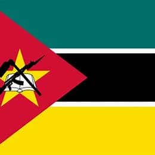

Liedson A. Nhapulo
About me
My name is Liedson Nhapulo. I live in Maputo, Mozambique. I have a big family with four brothers and two sisters, and I am the youngest in the family. I also have four nephews and one niece. I am a student studying electricity and technology, and I want to become a computer engineer in the future. I enjoy learning about web development, programming, and networks. I am always working to improve my skills and learn new things.
Maputo, Mozambique
Mozambique is a country in southeastern Africa, known for its culture and beautiful coastline. Its capital city, Maputo, is a vibrant place with markets, beaches, and modern buildings. Maputo is an important center for business, education, and culture in the country. The flag of Mozambique has meaningful colors and symbols that represent the nation’s identity. Green represents the land, black represents the people of Africa, yellow stands for mineral wealth, white symbolizes peace, red represents the struggle for independence, the star stands for unity, the book represents education, the hoe represents agriculture, and the gun represents defense.

The flag of Mozambique